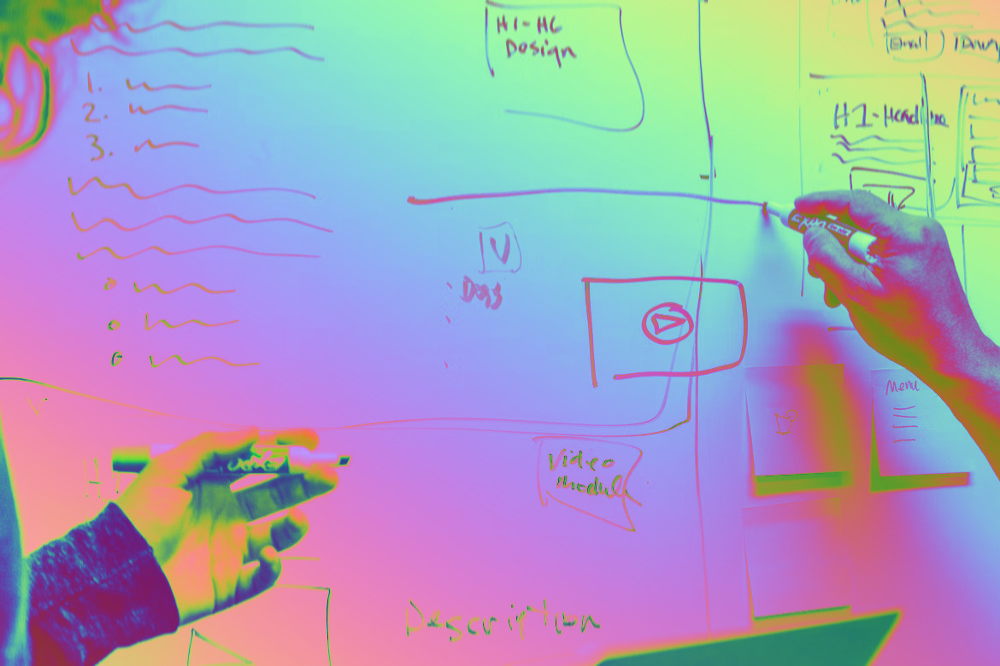
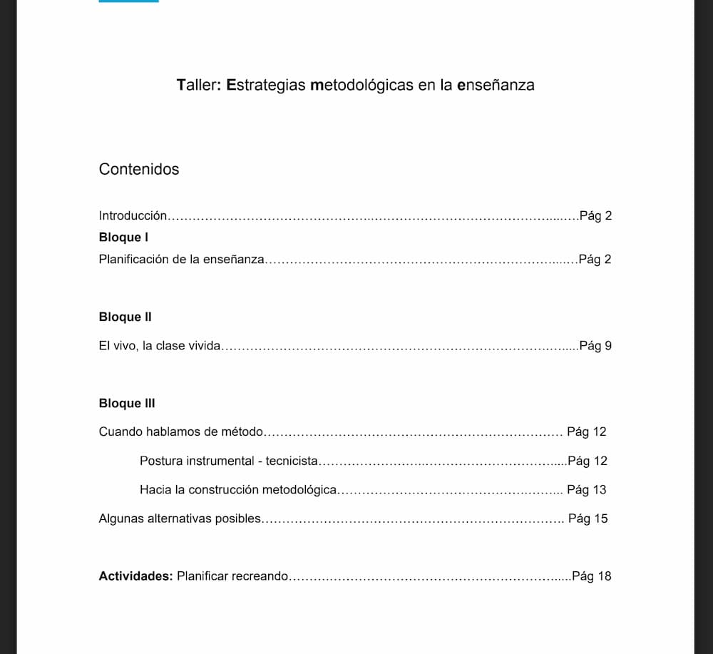
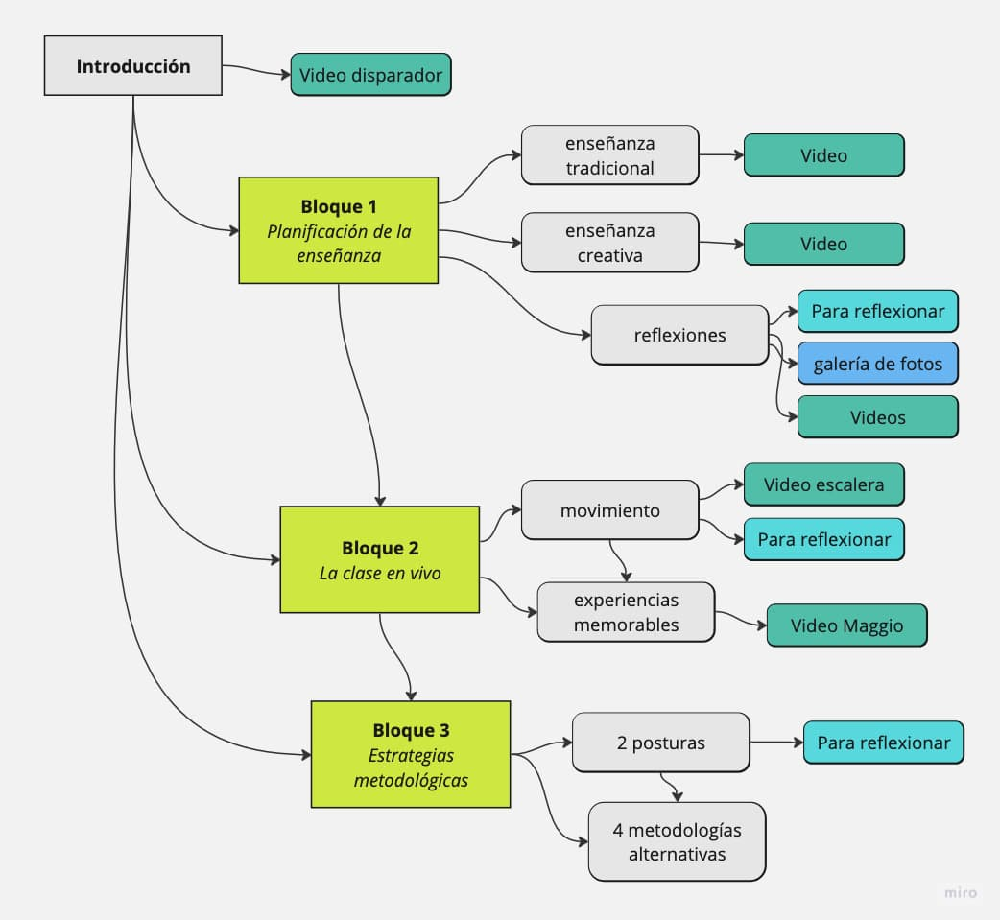

⭐ Clave
La arquitectura de la información consiste en organizar, jerarquizar y clasificar los contenidos que deseamos incluir en el material.
La arquitectura de la información consiste en organizar, jerarquizar y clasificar los contenidos que deseamos incluir en el material.
Una buena arquitectura le permitirá al estudiante, comprender fácilmente la estructura del material, encontrar rápidamente lo que busca, diferenciar los elementos principales de los secundarios y, establecer relaciones entre ellos y con el programa general de la asignatura.

Para pensar la arquitectura de nuestro material les proponemos realizar un mapa conceptual que contenga:
Veamos cómo se trabajó durante esta etapa en el desarrollo de los prototipos:
Partimos de un material en formato PDF de 20 páginas que contiene la totalidad de los contenidos del taller. Está dividido en:

Consideramos que el material está claramente estructurado, y acompaña de manera orgánica la estructura del taller presencial (tres clases y una actividad), por lo que no proponemos un cambio en su arquitectura básica.
A partir de allí, fuimos clasificando los contenidos y bocetando mejor un mapa del material a producir:

Observamos que la organización de la materia en el aula moodle es clara y funcional a las tareas que allí deben realizarse. En ese sentido, vemos que el menú principal es correctamente aprovechado para disponer los acceso a las carpetas principales: presentación, las 6 unidades que integran la materia y otras carpetas útiles (trabajo final, recursos, evaluación, etc). A su vez, la clasificación de los contenidos está asociada al orden establecido en el programa de la materia, por lo que resulta conveniente la propuesta de navegación lineal.
En relación al objetivo de este prototipo, creemos que podrían incluirse algunos recursos que potencien la experiencia usuaria:
Integrar diferentes tipos de contenido dentro de un video interactivo: en cada unidad de la materia se presentan una serie de contenidos visuales, audiovisuales, textuales, icono verbales e hipertextuales que se encuentran distribuidos en cada pestaña del aula moodle. En este caso, la idea es ofrecer organizar un recorrido a través de los contenidos principales e integrarlos dentro de un video que mantenga al estudiante en esa pantalla sin tener que navegar por otras pestañas, presentándole videos con lecciones y actividades interactivas o recursos complementarios para profundizar los conocimientos.
Recuperar conceptos principales de los videos en actividades interactivas: en los videos de cada unidad podrían agregarse actividades que aborden y destaquen los conceptos principales que allí se presentan. A través de pausas activas durante la visualización de los videos, esperamos colaborar en la identificación de conceptos importantes que formen parte de los sub temas desarrollados en cada unidad. Un criterio a tener en cuenta puede ser que el diseño de las actividades parta de considerar las ideas principales que serán requeridas en las instancias de evaluación de cada unidad.
Establecer hipervínculos entre las unidades: en la unidad elegida para el desarrollo del prototipo, generar hipervínculos con los contenidos de las unidades anteriores y posteriores con el objetivo de recuperar conceptos principales que ya fueron presentados y anticipar la relación con conceptos que se desarrollarán más adelante. De este modo, nos proponemos acompañar activamente al estudiante en su recorrido por el aula virtual.Los hipervínculos se pueden generar a través del tipo de contenido “tip” de H5P, el cual permite que aparezcan pequeñas ventanas con leyendas en diferentes momentos. Por ejemplo, durante la visualización de un video o en diferentes páginas de la presentación.
Otra forma de generar estos hipervínculos puede ser mediante checklists que aparezcan al comienzo de cada unidad, donde el equipo docente presente una lista de los conocimientos que se enseñarán y las competencias que se desarrollarán.
El estilo que podríamos utilizar para interpelar a las personas usuarias podría ser la segunda persona del singular y el tono podría ser alegre, tranquilo, comprensivo y motivacional. Por ejemplo:
¡Ya llegaste a la Unidad 2! Ahora vas a aprender a:- Comprender el contexto socio económico de Latinoamérica- Diferencias los principales desafìos de X1- Interpretar críticamente cómo X2- Proponer estrategias de X3¿Todo listo? ¡Vamos!
Para cerrar esta etapa, debemos poder tener un esquema claro de cómo se compone nuestro material.
Obra publicada con Licencia Creative Commons Reconocimiento Compartir igual 4.0